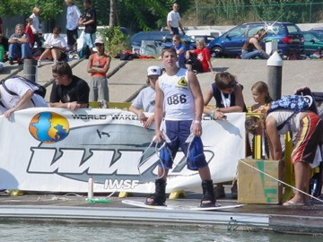
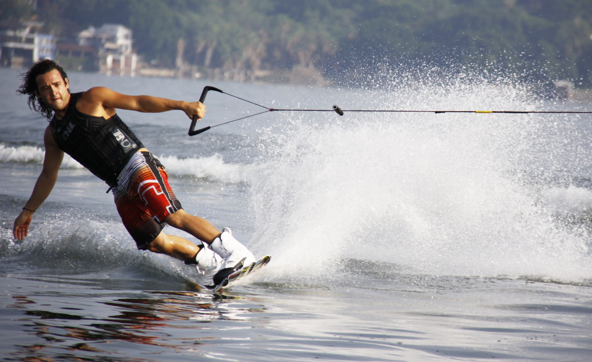

Wakeboards as we know them started with San Diego surfer Tony Finn. Finn created the Skurfer, a cross between a water ski and a surfboard, in 1985 and marketed it heavily.
Herb O'Brien, owner of H.O. Sports, took an interest in wakeboarding in the late '80s. He created the Hyperlite, the first compression-molded wakeboard, in 1991. Its natural buoyancy allowed for easy deep-water starts, making wakeboarding accessible for many more people.
In 1999, the World Wakeboard Council (WWC) was formed as a part of the International Waterski Federation (IWSF). The purpose was to bring together wakeboarders from around the world.
In 2009, the IWSF changed its name to the International Waterski & Wakeboard Federation (IWWF).
Today, almost 4 million people wakeboard. It is one of the fastest growing sports in the world.
